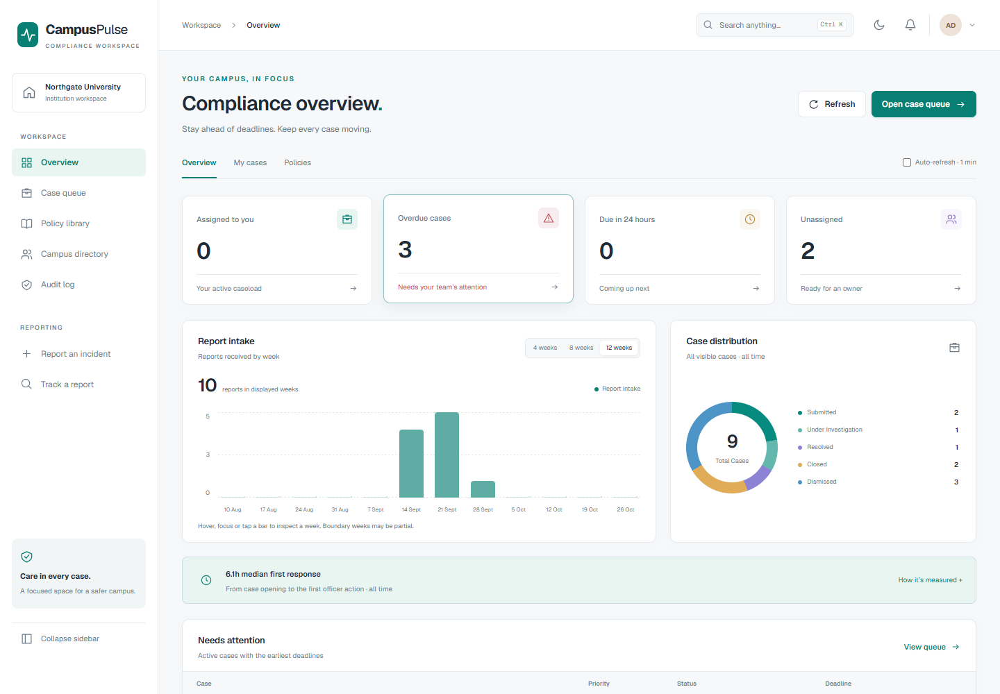

01 / Inventory decisions
InventoryIQ
From a reorder suggestion to a received delivery. Explore forecasts, scenarios and the merchant workflow.
Explore the case study ↗Running app capture · sample retail data
I'm Bala — an MBA candidate in Operations & Business Analytics with an electrical engineering foundation. From nine weeks on a sponge-iron plant floor to inventory decision tools, I connect operational observations with practical analysis.
 Explore project ↗
Explore project ↗A machine-learning workbench connecting data preparation, model comparison, evaluation, explainability and governance evidence through a shared Python workflow and a web console.
 Explore project ↗
Explore project ↗An operations-focused MLOps console for exploring telemetry, recorded model decisions and inspection capacity, paired with a companion site explaining the shadow-pilot workflow.

Explore project ↗A relational data-management project with a campus incident platform and a compliance web application: structured reporting, institution-scoped case workflows, policy records and operational dashboards.
 Explore project ↗
Explore project ↗An operations decision prototype linking inventory economics, plant performance and demand forecasting. Its working cockpit exposes the assumptions and trade-offs behind recommendations.
From a reorder suggestion to a received delivery. Explore forecasts, scenarios and the merchant workflow.
Explore the case study ↗Running app capture · sample retail dataLook beyond the average. Explore variation, stability and what a process is telling you.
Explore the working tool ↗Interface preview · demonstration data
Nine weeks connecting material flow, shift records and the people closest to the process.
Explore the field study ↗Plant image from the existing case study
Engineering, operations or analytics.
Choose a lens. See the evidence.
My career is taking shape where electrical systems, operations and business analysis meet.
My undergrad in Electrical & Electronics taught me to read a single-line diagram, simulate a 87G differential relay, and audit motor energy loads. My MBA at Amrita School of Business is teaching me to convert those technical observations into NPV cases, reorder-point models, and supply-chain decisions.
I've completed in-plant training at TANGEDCO's Valuthur Gas Turbine Power Station and the Pasumalai Sub-Load Dispatch Centre, and a nine-week MBA operations internship (April–June 2026) at Agni Steels' Sponge Iron Division in Perundurai — a 100 TPD coal-based DRI plant. And I've built working analytics tools — not slide decks — to solve problems I actually saw.
I'm targeting operations and analytics roles where electrical systems meet business outcomes — Schneider Electric, Hitachi Energy, ABB, Siemens, Honeywell.
B.E., PSNA College of Engineering and Technology, Dindigul. CGPA: 7.15.
A foundation in electrical systems, MATLAB and engineering analysis.
In-plant training at TANGEDCO's Valuthur Gas Turbine Power Station and the Sub Load Dispatch Centre.
Observed start-up, shutdown and equipment monitoring; learned about load scheduling and SCADA-based monitoring.
Explore the energy study ↗Amrita School of Business, Amrita Vishwa Vidyapeetham, Coimbatore. Current CGPA: 6.83.
Connecting engineering foundations with inventory planning, process improvement and business analysis.
Sponge Iron Division, Perundurai. Mapped the material flow of a 100 TPD plant, from receipt to dispatch.
Combined daily shift logs and compared them with lab quality results to investigate unplanned downtime. Worked with supervisors, the QC lab and operations staff to cross-check records.
Read the field study ↗
Turns plant energy data into auditor-grade savings in ₹ and CO₂ — ISO 50001 baselining and IPMVP Option C M&V. Validated on a real steel-plant dataset, where it correctly refused to certify a baseline it couldn't stand behind. 151 tests, CI/CD, deployed live.
A merchant app and manager dashboard connecting reorder decisions, incoming stock, delivery receipts, demand forecasts and what-if scenarios. Explore five real app captures and a verified sample order cycle, with twelve built-in demo products.
A kiln drifts before it fails — most plants only see it afterwards. Live SPC with Western Electric + CUSUM rules, an instability index, metallisation forecasting and AI root-cause analysis. Runs real plant CSVs through the same engine.
Read the case study P / 02 · MBA operations studyTANGEDCO's own five operational lenses — O&M, crisis management, safety, reliability, efficiency — applied to real multi-year plant data from in-plant training at the Valuthur gas turbine station.
Read the field study P / 08An adaptive differential scheme built on real plant data (51,921 A bus fault) — motivated by the 2010 Valuthur stator earth fault and its 3-month outage.
Open P / 14Process study & improvement on a coal-based DRI rotary kiln, 100 TPD — kiln logs correlated with lab QC (FeM/FeT) into a data-backed proposal on accretion and coal interaction.
Open Tool / 03 · Live ★A working quality-engineering workspace — control charts, capability, DOE, MSA, FMEA. The statistical foundation behind ProcessPilot AI.
Open the workbench P / 15Four sensors (soil moisture, temperature, humidity, pH) on an Arduino stream over serial to a Python K-Nearest-Neighbours classifier (k=5) — labels plant condition NORMAL vs ABNORMAL on 701 readings and auto-emails an alert on abnormal.
Read the buildFour analytics projects from MBA Trimester I — clustering, text mining, association rules and behavioural modelling. Graded coursework, published on my MBA blog; all source and data downloadable.
k-means + hierarchical clustering; elbow method confirmed k=3 optimal segments.
Text-mining pipeline — corpus, DTM, cosine similarity, document clustering, word cloud.
Apriori on 38,765 grocery transactions across 3,898 shoppers — association rules mined with arules.
3,900 transactions, 8 methods — ANOVA, PCA, EFA, k-means, logistic regression, LDA.
Most MBA projects end with a slide deck. Mine end with something you can actually use — all three ship with real demo data and run in the browser.
Inventory decision intelligence for unorganised small retail — health score, revenue-at-risk, demand forecast and a what-if simulator on top of EOQ + ROP + safety stock + ABC. Installable, offline-first, CSV in/out.
Process-stability intelligence for a sponge-iron kiln — live SPC on 10 variables, Western Electric + CUSUM drift detection, instability index, metallisation forecasting, AI root-cause analysis.
A governance-first "company brain" I designed to orchestrate multi-product development — a CEO orchestrator, 9 division managers, and specialist sub-agents, all wired through a Strategic Filter, a blocking Security gate, and a Knowledge Graph that logs every lesson. This is the agent org that coordinates building products like WattsWorth — it is not itself a deployed commercial product.
— hover or tap a manager to see their role
Turns vague founder requests into structured strategy using PESTLE, Porter's Five Forces, VRIO, McKinsey 7S, and the Balanced Scorecard. Produces one-page memos, phase plans, and risk maps.
Sub-agentsDecides what gets built and why — assigns each product a role in the Portfolio Matrix (Revenue / Users / Data / Trust / Innovation). No feature passes without a measurable value statement.
Sub-agentsOwns build, test, ship, and monitor. Four hard gates that cannot be waived: code review → tests pass → CI/CD green → monitoring wired → rollback plan exists.
Sub-agentsRuns the 70/20/10 innovation portfolio. Builds capabilities, not products — a Forecasting Engine that spawns multiple products. Multi-model routing enforced: never depend on one provider.
Sub-agentsInternal tooling, vendor management, and the data → AI → decisions flywheel. Turns every usage log, failure, and feedback into a compounding improvement.
Sub-agentsNothing ships without passing this gate. Security-by-design and compliance-first architecture from day one — not bolted on after. Covers OWASP Top 10, GDPR, SOC2, and AI-regulation checks.
Sub-agentsPer-product marketing sites and brand identity — each product keeps its own visual language, like Instagram inside Meta. External-facing copy through the content-sop skill.
Sub-agentsPipeline and enterprise deals. Evidence before assumptions, conversations before demos, pilots before scaling — per the Customer Discovery Constitution.
Sub-agentsOutcomes, retention, and NPS after a deal is won. Customer trust is non-negotiable; data ownership belongs to the customer.
Sub-agentsEOQ, reorder points and ABC analysis in a working decision tool.
Explore the current app →Explore process signals and the tools behind continuous improvement.
Explore ProcessPilot →Material movement, plant constraints and observations from the field.
Read the Agni Steels study →An observational MBA internship study at a coal-based Direct Reduction plant. Process flow mapped end to end; real plant issues gathered from the operations team; Pareto + Fishbone applied. The numbers below are plant characteristics and operator-quoted estimates — not measured downtime data.
Annual demand D = monthly demand × 12. EOQ = √(2 × D × cost per order ÷ annual holding cost per unit). Reorder point = (D ÷ 300) × (lead time + 3 buffer days), rounded up.
This teaching example uses a fixed buffer, not a service-level or uncertainty model. The chart illustrates the cycle; it is not a forecast.
VGTPS generation cost swung from ₹1.32/kWh to ₹22.34/kWh in 16 years — a 17× move. Engineers logged it as "gas price up, PLF down." "Our cost of generation has 17×'d" is a board conversation; "PLF declined" is a footnote. People who translate technical facts into financial language get the budget.
At Agni Steels every kiln parameter is on a control-room screen in real time — yet accretion still sneaks up. The next gain isn't more sensors; it's predictive analytics on the history already being logged. That's where an operations manager who can model adds real value.
A Madurai shop owner keeps a smartphone in the apron, not a laptop on a desk. So InventoryIQ is mobile-first: one tap, one number, "order N units." The best operational tool is the one that survives contact with the real floor.
MBA candidate, engineer and curious problem-solver. Explore the résumé for my education, experience and current skills.
Excel · Python / pandas (basics) · SQL (basic queries) · Git & GitHub · AutoCAD 2D · MATLAB
Six Sigma and the Organization (Advanced) · Microsoft Office Specialist · AutoCAD 2D (Internshala) · Generative AI Mastermind
Tamil (native), English (professional), Japanese (elementary). Football, reading and video editing.
Open to placement conversations with Schneider Electric, Hitachi Energy, ABB, Siemens, Honeywell, and similar companies where engineering and operations meet.
Download résumé ↓